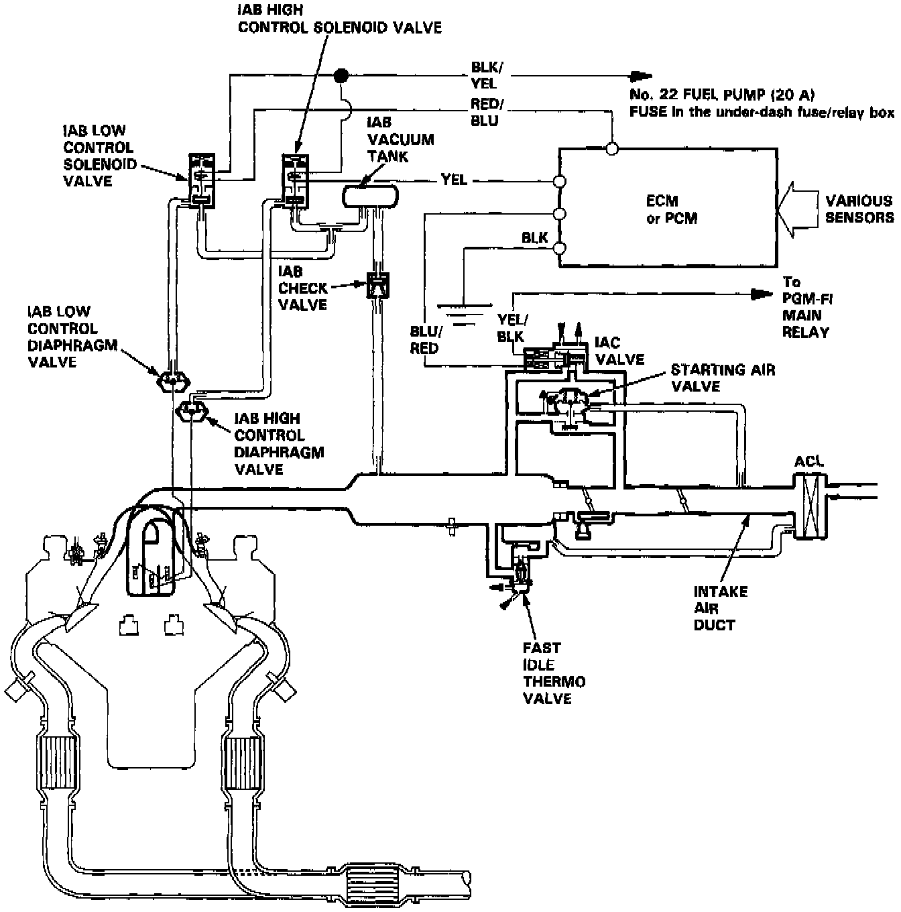

Intake Air System

DESCRIPTION
The system supplies air for all engine needs. It consists of the Air Cleaner (ACL), air intake duct, Throttle Body (TB), Idle Air Control (IAC) Valve, fast idle thermo valve, and intake manifold. A resonator in the intake air pipe provides additional silencing as air is drawn into the system.